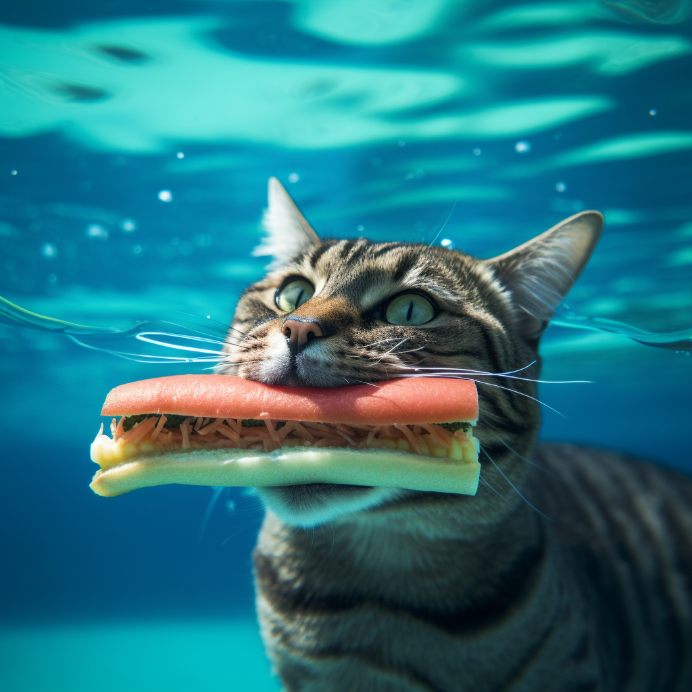
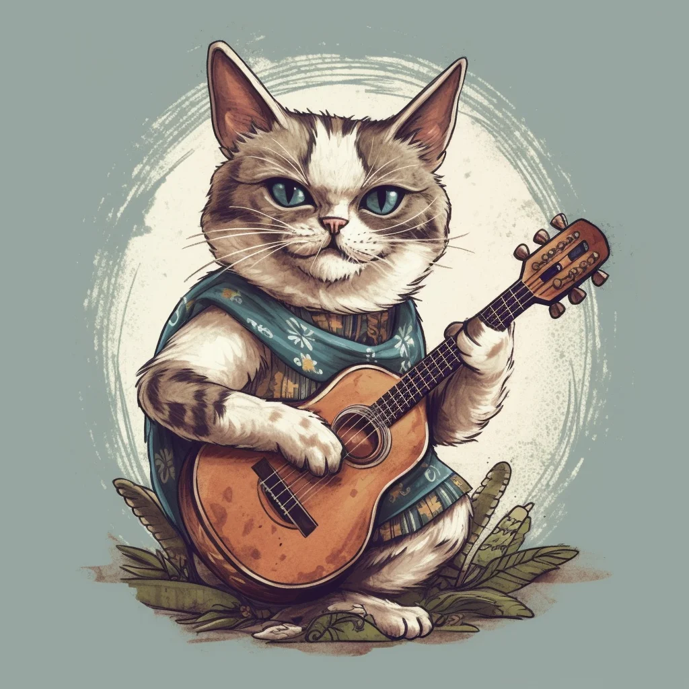

Swimming hotdog cat
Hold on to your funny bones!
If you're a fan of absurdity and have a knack for finding humor in the weirdest places, you're in for a treat! Forget about investing in imaginary assets like NFTs; instead, dive into the surreal world of a cat enjoying a hotdog underwater. It's the kind of masterpiece that'll have you laughing uncontrollably. Our advice: spend your weekend recreating this scene, and by the time next week rolls around, you'll be the life of the party.
Buy a Front-Row Ticket Get the Giggle DetailsBanjo Cat
If you appreciate fine musical talents, behold the Banjo Cat! This remarkable feline virtuoso has mastered the art of banjo playing while donning a stylish poncho. The combination of musical prowess and fashion sense is truly awe-inspiring. While some may find $33,000 for sneakers to be extravagant, the investment in this Banjo Cat masterpiece is worth every penny.
Learn About Banjo Cat Contact the Cat MusicianIf you have any questions or would like to know more about Banjo Cat's performances, please don't hesitate to reach out. We're dedicated to promoting the exceptional talents of our feline friends.